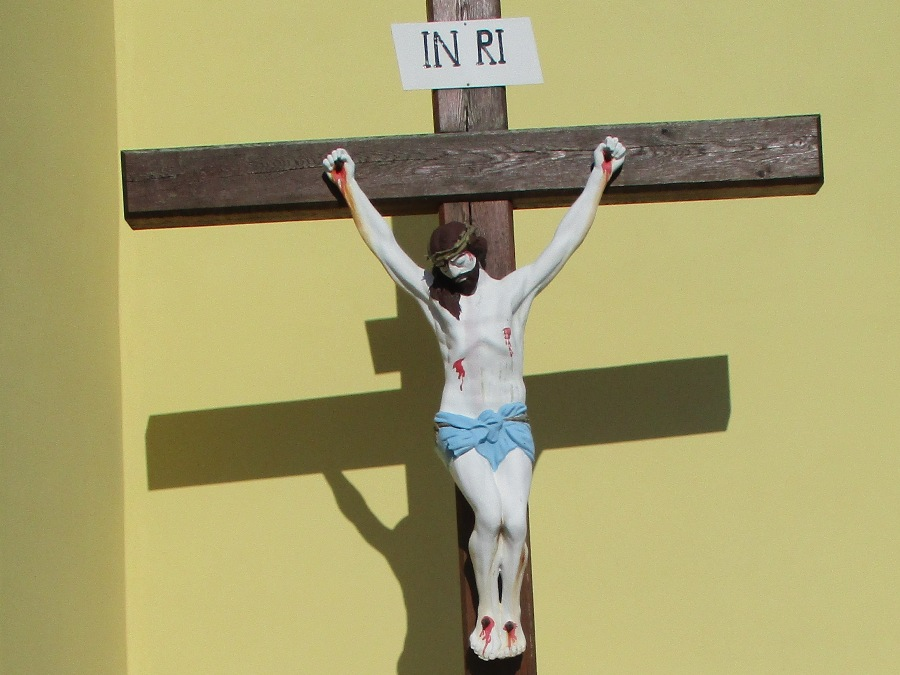
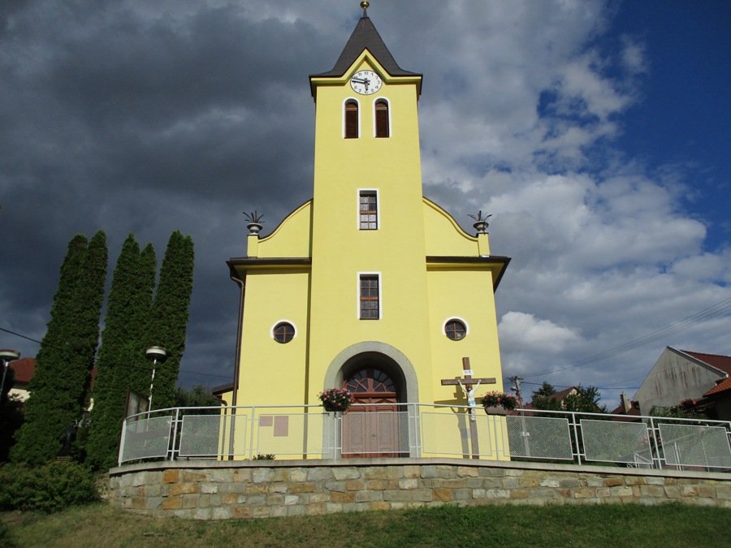
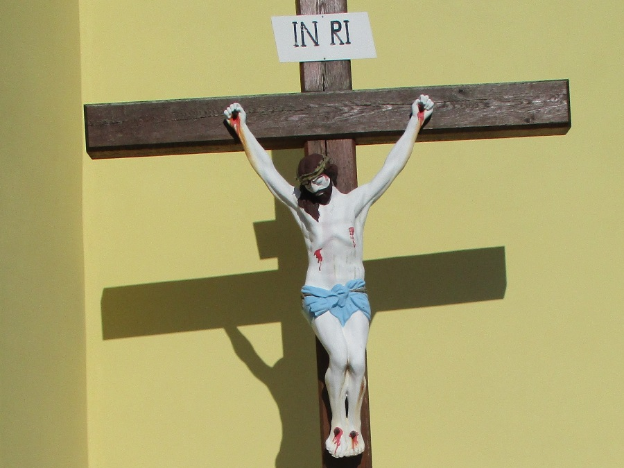
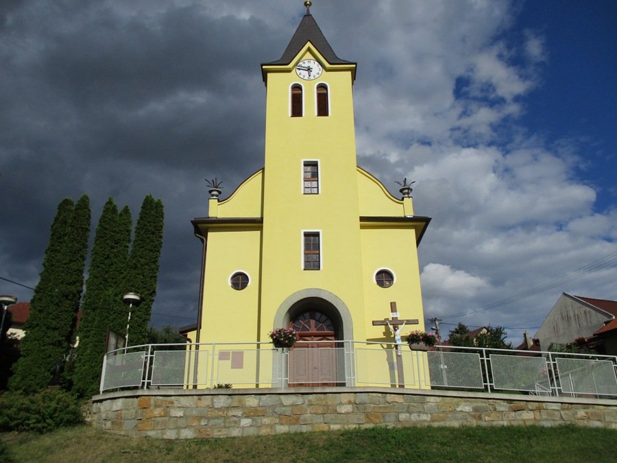

Ke vzniku kostela
Už v dobách, kdy se z naší obce chodívalo na procesí, začala zde vznikat myšlenka postavit i u nás kapličku. Tento nápad horlivě propagoval Josef Zmrzlík, zvaný zpěvák, který procesí vodíval.
Pro nedostatek finančních prostředků zůstala kaplička dlouho jen plánem a snem zdejších občanů. Prvním příspěvkem bylo 250 zlatých, které na stavbu kapličky odkázal svobodný mládenec Alois Fajgar a dále pak 27 zlatých z poslední vůle svobodné dívky Aloisie Fajgarové. V roce 1904 byla vykonána sbírka, která vynesla asi 35 zlatých. Celý obnos byl uložen u Spořitelny města Napajedel. Další obnos přibyl v roce 1910. Občané komárovští chodili do farního kostela v Pohořelicích přes zámecký park hraběte Šternberka. To hrabě nelibě nesl a žádal pro naši obec, že cestu přeloží podél parku na současné místo. Za to nabídl částku 2.500 K, která měla být věnována na postavení kaple v Komárově. Po první světové válce, kdy finance na obou knížkách vzrostly asi na 7000 K, však nebylo na stavbu ani pomyšlení. Poměry se velmi změnily a náklady na postavení kaple by obnášely nejméně 100 000 K.
V roce 1937 se myšlenky stavby kostela ujal nový starosta František Hanáček. Nemalou zásluhu na tomto díle měli také Josef Úředníček, předseda výboru pro stavbu kaple, a Kristián Klofáč, který vedl stavbu kostela a zdarma zhotovil plány a rozpočty. Samotnou stavbu řídil stavitel Alois Dostál z Napajedel.
V roce 1940 byl kostel dokončen a dne 16. června byl kostel vysvěcen. Slavnost svěcení vykonal zlínský děkan, P. Theodor Vavruša a zúčastnilo se jí mnoho lidí ze širokého okolí. Nechyběly ani významné osoby jako například manželé Paříkovi z Napajedel. V rámci této události se odpoledne konala také národopisná slavnost, na které byla předvedena slovácká svatba a různé staré zvyky.
V roce 1942 byl zrekvírován kostelní zvon.
V roce 1952 byl v kostele namontován hodinový stroj. Celkový náklad 96 tisíc Kč.
U příležitosti 50 let trvání kostela (17. června 1990) byl zhotoven vstupní reliéf nade dveřmi, který namaloval náš občan Petr Seidl.
Blízké okolí kostela by mělo v brzké době výrazně změnit svou podobu. Počítá se s vytvořením zelené plochy, výsadbou keřů a umístěním informačních panelů a posezení. Mělo by tak vzniknout místo k odpočinku nejen místních, ale i návštěvníků. Duchovní, kulturní a společenský význam tohoto místa tak bude navazovat na odkaz našich předků.